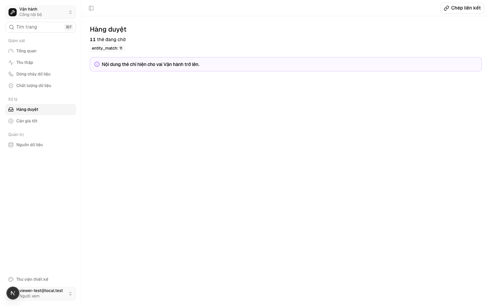
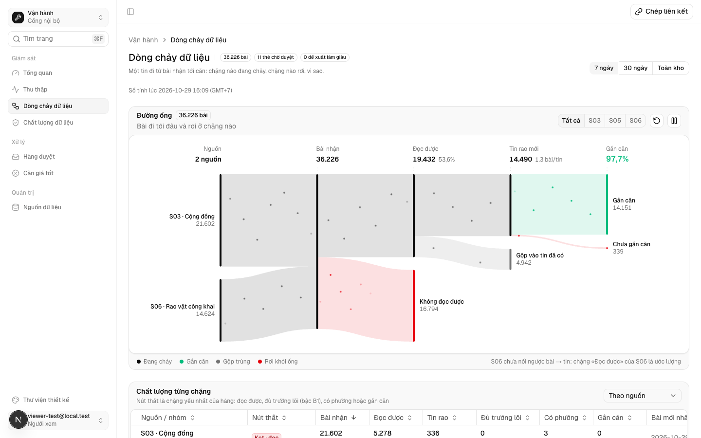
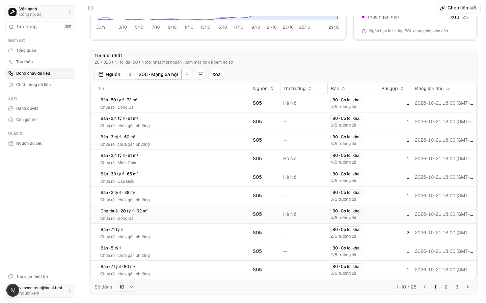
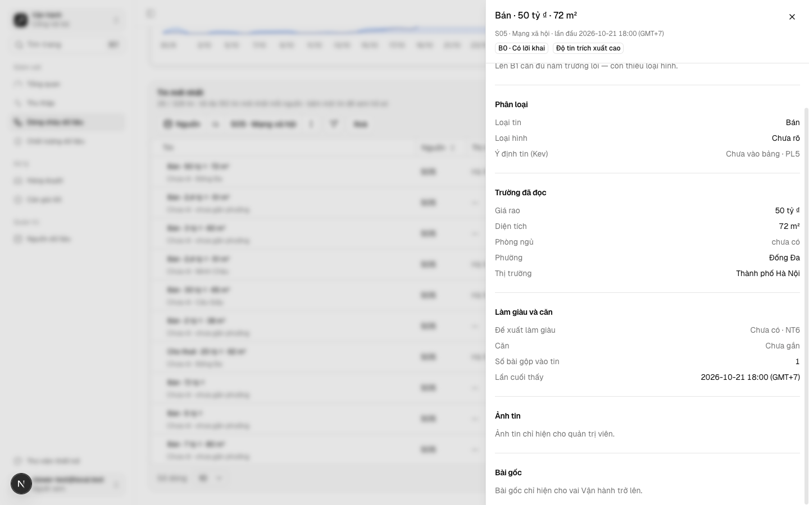
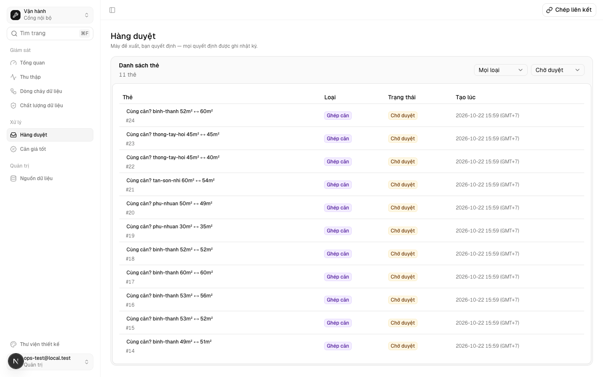
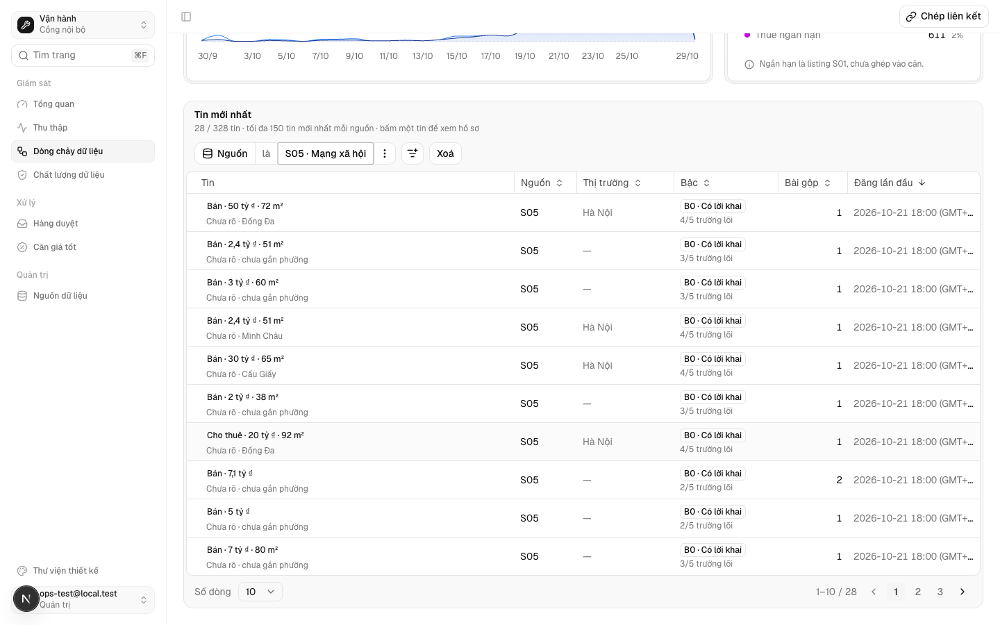
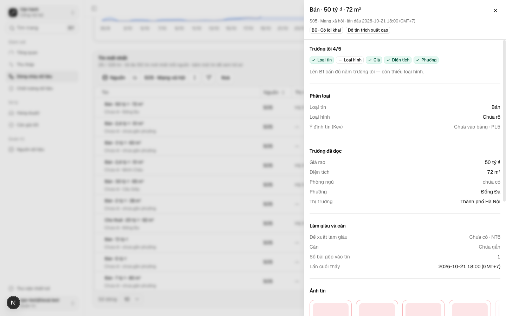
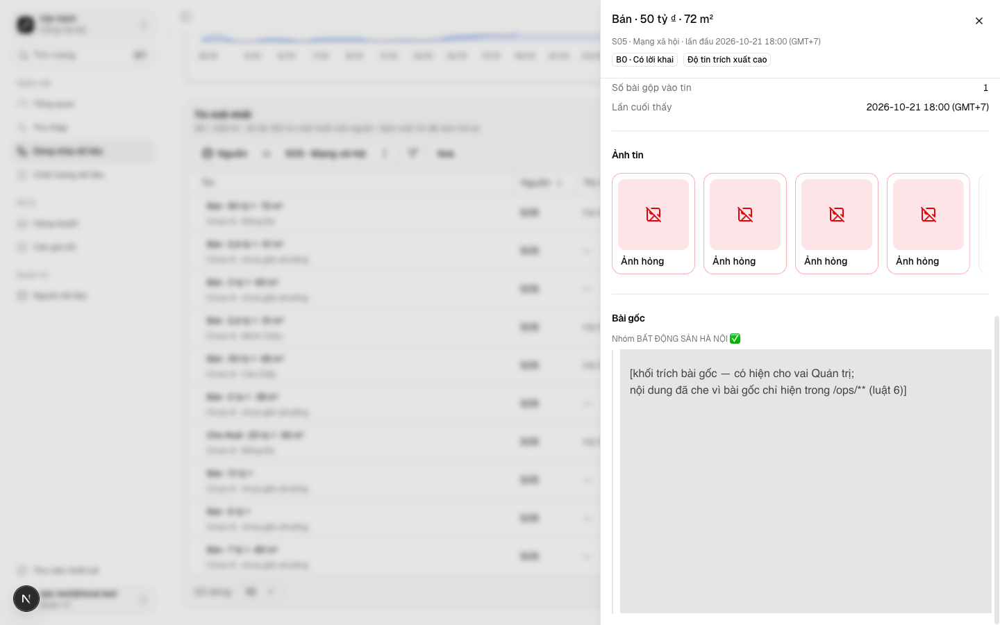

Vai người xem (viewer) vào được Cổng Ops nhưng không thấy nội dung thẻ duyệt và bài gốc — chỉ vai vận hành trở lên thấy
Vì sao làm
TV1 (quyen-bon-vai-mot-cho, PR #155) thêm vai viewer và cho nó qua canAccessOps. Trang /ops/review chỉ kiểm canAccessOps rồi vẽ nội dung thẻ duyệt (tiêu đề, bằng chứng, gợi ý và lý giải của AI). Luật 6 của AGENTS.md (sửa đổi ADR-0007) chỉ cho nội dung bài gốc, ảnh tin và thẻ duyệt lên cloud «cho vai ops trở lên»; §3.5 của docs/research/ops-tu-van-hanh-nguon-saas.md cho viewer xem «mã S0x, số, tin đã che». Hôm nay chưa ai mang vai viewer, nhưng cấp vai đó cho ai là người đó thấy thẻ duyệt nguyên văn. Nguồn: Ngoài-9 của _acceptance/quyen-bon-vai-mot-cho/review-findings.md.
Đã hứa
- AC-1 — Given người ở các vai user, viewer, ops, admin, owner và email trong `OPS_EMAILS`, When gọi `xemNoiDungTin`, Then user và viewer nhận false, ops, admin, owner và email `OPS_EMAILS` nhận true.
- AC-2 — Given lược đồ tạm có ba thẻ chờ thuộc hai loại, mỗi thẻ mang chuỗi nhận diện riêng trong tiêu đề, bằng chứng, gợi ý và lý giải, When dựng `/ops/review` (ReviewContent) cho vai viewer, Then trang hiện tổng 3 thẻ chờ và số theo từng loại cùng câu «Nội dung thẻ chỉ hiện cho vai Vận hành trở lên.»; không chuỗi nhận diện nào có trong HTML, trong props của mọi phần tử của cây trả về, hay trong các dòng mà DB trả cho trang. (cross-layer)
- AC-3 — Given cùng dữ liệu thẻ và bản ghi dòng chảy có bài gốc, When dựng hai trang (/ops/review, thân /ops/data-flow) cho sáu kiểu người (user, viewer, ops, admin, owner, email `OPS_EMAILS` với role user), Then nội dung thẻ và bài gốc có mặt đúng ở bốn kiểu ops trở lên và vắng ở user, viewer (ma trận 6 × 2 viết trước); cờ xem bài gốc trao cho DataFlowView bằng false ở user, viewer và true ở bốn kiểu còn lại.
- AC-4 — Given bản ghi dòng chảy có bài gốc, When dựng thân `/ops/data-flow` cho vai viewer, Then dữ liệu trao cho thành phần client có `postText` và `postGroup` bằng null ở mọi bản ghi và không chuỗi bài gốc nào có trong props; thân trang tự đọc người đang đăng nhập (`getUser` mặc định là phiên đăng nhập thật). (cross-layer)
- AC-5 — Given sheet của một bản ghi có bài gốc, When mở sheet với cờ không xem bài gốc, Then sheet hiện «Bài gốc chỉ hiện cho vai Vận hành trở lên.» và không hiện bài; với cờ được xem thì hiện bài và tên nhóm.
- AC-6 — Given lược đồ «như máy chủ» (vắng review_queue và bảng nạp), When dựng hai trang cho vai viewer và vai ops, Then cả hai vai nhận đúng khuôn cloud như hôm nay: /ops/review có số thẻ chờ + thông báo «chỉ có ở máy thu»; /ops/data-flow (khuôn cloud của DF1) trao cùng dữ liệu tin cho hai vai, không bản ghi nào mang bài gốc, sheet bản ghi ghi «Bài gốc chỉ xem ở máy thu.», và HTML của viewer trùng HTML của ops.
- AC-7 — Given cây sau sửa, When chạy bộ test app (gồm bộ quét chữ hiển thị của cổng Ops ops-nhan-theo-context và các ca thử cũ ops-dong-chay, review-media, o-kpi-chi-do-local, ops-review-sources-cloud), Then tất cả xanh.
- AC-8 — Given mọi `page.tsx` dưới `app/src/app/ops/` và mọi `route.ts` dưới `app/src/app/api/` của cổng Ops, When đối chiếu với bảng kiểm kê viết trước (route → có đọc thẻ duyệt, bài gốc hay ảnh tin không → cách che với vai dưới Vận hành), Then mỗi route trong cây có đúng một dòng trong bảng, mỗi route đọc nội dung đi qua `xemNoiDungTin` hoặc `isAdmin`; một route mới đọc `review_queue` mà không khai thì ca đỏ, nêu tên route.
- AC-9 — Given tài khoản thử vai viewer trên DB local và app dev chạy từ worktree, When đăng nhập và mở `/ops/review` rồi `/ops/data-flow` (mở sheet một bản ghi có bài gốc), Then màn hình hiện hai câu chú thích và không hiện tiêu đề thẻ hay bài gốc nào; cùng màn với tài khoản thử admin hiện nội dung. (cross-layer)
Thiết kế
docs/superpowers/specs/2026-10-27-viewer-khong-thay-the-duyet-design.md
Quyết định
- 2026-10-27 · Máy · approach · S1 — Đã tra tri thức: Vai viewer (người xem) vào Ops nhưng không thấy nội dung thẻ duyệt review_queue, tin gốc và ảnh — chỉ vai ops trở lên thấy (luật 6, ADR-0007 sửa đổi); trang /ops/review và mọi chỗ đọc thẻ kiểm theo bảng quyềnKho đã khai tri_thuc — bước thiết kế tra trang trước khi chọn.
- 2026-10-27 · Máy · approach · S1 — Ngưỡng xem nội dung tin và thẻ duyệt là vai Vận hành trở lên, qua một hàm xemNoiDungTin ở ops-access.ts; viewer chỉ thấy số và mã.Luật 6 cho nội dung bài gốc, ảnh và thẻ duyệt tới vai ops trở lên; §3.5 cho viewer «mã S0x, số, tin đã che» (AC-1..AC-5).
- 2026-10-27 · Máy · approach · S1 — Che ở phía máy chủ: /ops/review không truy vấn cột nội dung cho viewer; /ops/data-flow thay postText/postGroup bằng null trước khi trao cho thành phần client.DataFlowView và ReviewQueue là thành phần client — mọi prop đi xuống trình duyệt, nên ẩn ở giao diện mà vẫn gửi dữ liệu là vẫn lộ (AC-2, AC-4).
- 2026-10-27 · Máy · approach · S1 — Tách thân /ops/data-flow thành components/ops/data-flow/data-flow-content.tsx nhận user, để ca thử dựng được với từng vai.Thân trang hiện đọc getSessionUser (cookies của Next) bên trong page.tsx — ngoài máy chủ Next không gọi được (AC-4, AC-6).
- 2026-10-27 · Máy · descope · S1 — KHÔNG che định danh tài khoản thu trong GET /api/v1/ops/collections, group_key S05 ở GET source-groups, khoá airdna* ở truthful-coverage; không đưa thẻ hay bài gốc lên cloud.Khảo sát 27/10: các chỗ ấy tới cả vai ops và bearer chung từ trước TV1 — là câu hỏi tầng A riêng, không phải nội dung tin cho viewer.
- 2026-10-27 · Máy · descope · S1 — bỏ đặc-tả-UX — vòng chỉ ẩn hai khối nội dung có sẵn và đặt một câu chú thích theo khuôn câu «Ảnh tin chỉ hiện cho quản trị viên.» đã có.Không có màn, luồng hay khối mới; khuôn câu và vị trí đã có trên chính hai trang.
- 2026-10-27 · Máy · descope · S1 — bỏ design-pass — chỉ ẩn khối và thêm một câu chú thích theo khuôn có sẵn, không có bản bấm được mới để duyệt.Không thành phần, bố cục hay luồng mới; câu chú thích dùng đúng chỗ và khuôn câu đã có.
- 2026-10-27 · Máy · descope · S1 — bỏ ui-observed — chưa có tài khoản vai viewer trên DB máy thu (cấp vai là việc người, TV1); đo bằng dựng thành phần server và client trên dữ liệu thật của lược đồ tạm.Muốn chụp màn với vai viewer phải đổi role một tài khoản trên DB dùng chung — việc người, ngoài vòng (AC-2..AC-6 đo ở lớp thành phần).
- 2026-10-27 · Máy · approach · S1 — Hỏi-1: định danh tài khoản thu (zaloAccounts, ownerAccount, groupId nhóm Zalo) ở GET /api/v1/ops/collections và /ops/collections để ngoài vòng này — mở hàng riêng trước khi cấp vai viewer cho ai.Gap-probe P0: việc ai thấy định danh tài khoản thu là nghĩa sản phẩm; nó tới cả vai ops và bearer chung từ trước TV1, không phải nội dung tin (AC-8 kiểm kê chỉ phủ thẻ, bài gốc, ảnh).
- 2026-10-27 · Máy · approach · S1 — Có chụp màn bằng vai viewer (E9 ui-check): mở CLI scripts/dev-ops-account.mjs thêm --vai viewer tạo tài khoản thử viewer-test@local.test trên DB local, cùng khuôn tài khoản thử admin.Gap-probe P0: lối chụp màn còn sống — AGENTS.md cho tài khoản thử trên DB local qua dev-ops-account (AC-9).
- 2026-10-27 · Máy · approach · gate1 — Mạnh trả lời ở Cổng Phạm vi: Hỏi-1: mở hàng riêngTheo đúng khuyến nghị trên thẻ; câu nguyên văn của lệnh duyệt.
- 2026-10-27 · Người · seal · gate1 —
- 2026-10-27 · Máy · approach · S2 — Bảng kiểm kê E8 khai 8 trang /ops và 14 route — con số «9 trang» trong ngoặc của evals E8 đếm nhầm; phép đo vẫn là khớp đúng tập trên đĩa.find app/src/app/ops -name page.tsx trả 8 tệp ngày 27/10; vế đo của E8 là deepEqual với đĩa, không phải con số ngoặc (AC-8).
- 2026-10-27 · Người (Mạnh) · approach · S2 — Gate 1.5: Mạnh duyệt kế hoạch thi công 7 việc (docs/superpowers/plans/2026-10-27-viewer-khong-thay-the-duyet.md).Hạng T3 dừng chờ người duyệt kế hoạch trước S3; câu người gõ: «duyệt kế hoạch».
- 2026-10-29 · Máy · revisit · S4-r1 — Sửa lời AC-4 vế cuối (thân trang tự đọc phiên qua getUser) và phần /ops/data-flow của AC-6 (khuôn cloud DF1: cùng dữ liệu tin cho viewer và ops, sheet ghi «Bài gốc chỉ xem ở máy thu.», HTML hai vai trùng); E3 chỉ đổi cách gọi; hồ sơ về draft chờ Mạnh ký lại Cổng Phạm vi.DF1 dong-chay-len-cloud gộp vào main (89730e6b) đổi DataFlowContent sang getUser tiêm được và bỏ cổng LocalOnlyAlert trên cloud có chủ đích (test DC-AC-6 cấm đặt lại); sau khi gộp main, VT-AC-3, VT-AC-4, VT-AC-6 đỏ; giám sát duyệt hướng sửa ở yêu cầu P1-42.
- 2026-10-29 · Người · seal · gate1 —
- 2026-10-29 · Máy · fix · S3 — Task 3 và ca VT-AC-6 của kế hoạch đổi theo DF1: test dựng thân /ops/data-flow bằng getUser tiêm được thay cho prop user, ca cloud kiểm khuôn DataFlowView mode cloud (dữ liệu tin, HTML, sheet của viewer bằng ops) kèm chiều đỏ đặt lại cổng «chỉ xem ở máy thu»; danh sách việc và tệp của kế hoạch giữ nguyên nên không mở lại Gate 1.5.Kế hoạch đã duyệt (Gate 1.5, 27/10) viết DataFlowContent({ window, user }) và cổng LocalOnlyAlert, mà DF1 trên main đã đổi cả hai; lời AC-4, AC-6 mới Mạnh ký ngày 29/10 (seal d-20261029T081112Z-16); E3, E4, E6 đỏ trước sửa, xanh sau sửa.
- 2026-10-29 · Máy · fix · S4-r1 — Bước E9 (chụp màn vai viewer và admin) chạy app dev của worktree này ở cổng riêng 3462 thay cho 3456; vế kỳ vọng của E9 không đổi.Cổng 3456 đang là next-server của worktree quirky-archimedes-75aa8c (pid 12405) và workflow chấm UI dùng chung server có sẵn ở cổng bận — chụp ở đó là chụp mã của nhánh khác; LUAT.md đợt: dãy dùng cổng riêng và ghi rõ trong bằng chứng.
- 2026-10-29 · Máy · fix · S4-r1 — Che dòng đường dẫn ảnh ở cuối khung bằng chứng E9-step5b.png (sheet của admin) bằng một ô xám ghi rõ đã che; khối trích bài mà E9 cần thấy vẫn nguyên.Đường dẫn ảnh trong bài gốc mang tên miền CDN thật của nguồn S03 — tầng A theo AGENTS.md luật 6, không rời máy local — trong khi kho phanlemanh/onehub-invest công khai; SĐT người bán và tên nhóm là tầng C nên giữ.
- 2026-10-29 · Máy · fix · S4-r2 — Bằng chứng E9 round 2 che toàn văn bài gốc ở khung admin E9-step9.png (giữ tiêu đề, tên nhóm và viền trích), che 10 đường dẫn CDN của nguồn trong E9-network.txt, lược đoạn trích bài gốc ở dòng observed của báo cáo, gỡ hai khung cũ round 1 (E9-step3b, E9-step5b).Finding round 2 (medium): ảnh bằng chứng đưa toàn văn bài gốc lên kho công khai, trái luật 6 «bài gốc chỉ hiện ở /ops/**»; đường dẫn CDN mang tên miền nguồn thật là tầng A.
Bằng chứng
Các eval
| Eval | Tiêu chí | Loại | Verdict | run_id | verified_at |
|---|---|---|---|---|---|
| E1 | AC-1 | test | PASS | minted-viewer-khong-thay-the-duyet-E1-r1 | 2026-10-29T08:28:56Z |
| E2 | AC-2 | test | PASS | minted-viewer-khong-thay-the-duyet-E2-r1 | 2026-10-29T08:28:56Z |
| E3 | AC-3 | test | PASS | minted-viewer-khong-thay-the-duyet-E3-r1 | 2026-10-29T08:28:56Z |
| E4 | AC-4 | test | PASS | minted-viewer-khong-thay-the-duyet-E4-r2 | 2026-10-29T09:07:09Z |
| E5 | AC-5 | test | PASS | minted-viewer-khong-thay-the-duyet-E5-r2 | 2026-10-29T09:07:09Z |
| E6 | AC-6 | test | PASS | minted-viewer-khong-thay-the-duyet-E6-r2 | 2026-10-29T09:07:09Z |
| E7 | AC-7 | test | PASS | minted-viewer-khong-thay-the-duyet-E7-r2 | 2026-10-29T09:07:09Z |
| E8 | AC-8 | test | PASS | minted-viewer-khong-thay-the-duyet-E8-r1 | 2026-10-29T08:28:56Z |
| E9 | AC-9 | ui-check | PASS | minted-viewer-khong-thay-the-duyet-E9-r2 | 2026-10-29T09:07:09Z |
| E10 | AC-9 | test | PASS | minted-viewer-khong-thay-the-duyet-E10-r2 | 2026-10-29T09:07:09Z |
Chi tiết từng eval
PASS E1 · test
AC-1: Given người ở các vai user, viewer, ops, admin, owner và email trong `OPS_EMAILS`, When gọi `xemNoiDungTin`, Then user và viewer nhận false, ops, admin, owner và email `OPS_EMAILS` nhận true.
carry-forward tu round 1 — delta khong cham paths cua eval
PASS E2 · test
AC-2: Given lược đồ tạm có ba thẻ chờ thuộc hai loại, mỗi thẻ mang chuỗi nhận diện riêng trong tiêu đề, bằng chứng, gợi ý và lý giải, When dựng `/ops/review` (ReviewContent) cho vai viewer, Then trang hiện tổng 3 thẻ chờ và số theo từng loại cùng câu «Nội dung thẻ chỉ hiện cho vai Vận hành trở lên.»; không chuỗi nhận diện nào có trong HTML, trong props của mọi phần tử của cây trả về, hay trong các dòng mà DB trả cho trang. (cross-layer)
carry-forward tu round 1 — delta khong cham paths cua eval
PASS E3 · test
AC-3: Given cùng dữ liệu thẻ và bản ghi dòng chảy có bài gốc, When dựng hai trang (/ops/review, thân /ops/data-flow) cho sáu kiểu người (user, viewer, ops, admin, owner, email `OPS_EMAILS` với role user), Then nội dung thẻ và bài gốc có mặt đúng ở bốn kiểu ops trở lên và vắng ở user, viewer (ma trận 6 × 2 viết trước); cờ xem bài gốc trao cho DataFlowView bằng false ở user, viewer và true ở bốn kiểu còn lại.
carry-forward tu round 1 — delta khong cham paths cua eval
PASS E4 · test
AC-4: Given bản ghi dòng chảy có bài gốc, When dựng thân `/ops/data-flow` cho vai viewer, Then dữ liệu trao cho thành phần client có `postText` và `postGroup` bằng null ở mọi bản ghi và không chuỗi bài gốc nào có trong props; thân trang tự đọc người đang đăng nhập (`getUser` mặc định là phiên đăng nhập thật). (cross-layer)
cd app && node --import tsx --test tests/viewer-the-duyet.test.tsx ca 'VT-AC-4' xanh (một lần chạy chung với E5, E6) ℹ duration_ms 2891.072625
PASS E5 · test
AC-5: Given sheet của một bản ghi có bài gốc, When mở sheet với cờ không xem bài gốc, Then sheet hiện «Bài gốc chỉ hiện cho vai Vận hành trở lên.» và không hiện bài; với cờ được xem thì hiện bài và tên nhóm.
cd app && node --import tsx --test tests/viewer-the-duyet.test.tsx ca 'VT-AC-5' xanh (một lần chạy chung với E4, E6) ℹ duration_ms 2891.072625
PASS E6 · test
AC-6: Given lược đồ «như máy chủ» (vắng review_queue và bảng nạp), When dựng hai trang cho vai viewer và vai ops, Then cả hai vai nhận đúng khuôn cloud như hôm nay: /ops/review có số thẻ chờ + thông báo «chỉ có ở máy thu»; /ops/data-flow (khuôn cloud của DF1) trao cùng dữ liệu tin cho hai vai, không bản ghi nào mang bài gốc, sheet bản ghi ghi «Bài gốc chỉ xem ở máy thu.», và HTML của viewer trùng HTML của ops.
cd app && node --import tsx --test tests/viewer-the-duyet.test.tsx ca 'VT-AC-6' xanh (một lần chạy chung với E4, E5) ℹ duration_ms 2891.072625
PASS E7 · test
AC-7: Given cây sau sửa, When chạy bộ test app (gồm bộ quét chữ hiển thị của cổng Ops ops-nhan-theo-context và các ca thử cũ ops-dong-chay, review-media, o-kpi-chi-do-local, ops-review-sources-cloud), Then tất cả xanh.
cd app && npm test cả bộ test app chạy một tiến trình, kết thúc xanh ℹ duration_ms 43636.431792
PASS E8 · test
AC-8: Given mọi `page.tsx` dưới `app/src/app/ops/` và mọi `route.ts` dưới `app/src/app/api/` của cổng Ops, When đối chiếu với bảng kiểm kê viết trước (route → có đọc thẻ duyệt, bài gốc hay ảnh tin không → cách che với vai dưới Vận hành), Then mỗi route trong cây có đúng một dòng trong bảng, mỗi route đọc nội dung đi qua `xemNoiDungTin` hoặc `isAdmin`; một route mới đọc `review_queue` mà không khai thì ca đỏ, nêu tên route.
carry-forward tu round 1 — delta khong cham paths cua eval
PASS E9 · ui-check
AC-9: Given tài khoản thử vai viewer trên DB local và app dev chạy từ worktree, When đăng nhập và mở `/ops/review` rồi `/ops/data-flow` (mở sheet một bản ghi có bài gốc), Then màn hình hiện hai câu chú thích và không hiện tiêu đề thẻ hay bài gốc nào; cùng màn với tài khoản thử admin hiện nội dung. (cross-layer)









PASS E10 · test
AC-9: Given tài khoản thử vai viewer trên DB local và app dev chạy từ worktree, When đăng nhập và mở `/ops/review` rồi `/ops/data-flow` (mở sheet một bản ghi có bài gốc), Then màn hình hiện hai câu chú thích và không hiện tiêu đề thẻ hay bài gốc nào; cùng màn với tài khoản thử admin hiện nội dung. (cross-layer)
node --test scripts/dev-ops-account.test.mjs ca mới trong describe 'vai viewer' và các ca cũ của tệp đều xanh ℹ duration_ms 597.961292
Eval không phân biệt (Analyst)
Vòng verify
- Round 1: E1-E10 đều đạt, không eval nào hỏng; không có judgment item. Verdict PASS.
- Round 2: chấm lại delta sau khi gộp main (f1971a7f). E4, E5, E6, E7, E9, E10 chạy lại và đều đạt; E1, E2, E3, E8 giữ nguyên từ round 1 (delta không chạm paths của các eval này). Không có judgment item. Verdict PASS.
Tài nguyên
| Khối | Tác tử | Token đầu ra |
|---|---|---|
| S4 round 1 | 16 | 69.438 |
| S4 round 2 | 16 | 64.547 |
2 lượt chấm · tổng 133.985 token
Giới hạn và ngoài hợp đồng
- Định danh tài khoản thu trong `GET /api/v1/ops/collections` và cột tài khoản ở `/ops/collections` (Hỏi-1 — khuyến nghị mở hàng riêng).
- `group_key` nhóm S05 ở `GET source-groups`; khoá `airdna*` ở `truthful-coverage`.
- Đưa nội dung thẻ, bài gốc lên cloud.
Giao
chưa ghi quan sát production
Giá trị
- Câu hỏi phép đo trả lời: một phiên vai viewer có đọc được nội dung thẻ duyệt, tin gốc hay ảnh tin ở bất kỳ trang hay — chưa đo
- Kết quả nào là SỐNG: 0 chỗ — mọi chỗ ấy che hoặc từ chối với viewer, còn vai ops trở lên thấy như hôm nay. — chưa đo
- Kết quả nào là CHẾT: còn một chỗ viewer đọc được nội dung tầng «ops trở lên». — chưa đo
- Timebox: trong đợt dot0-cam-mau, trước khi cấp vai viewer cho ai. — chưa đo